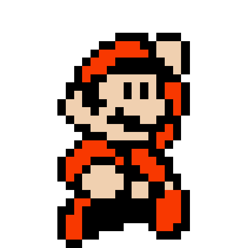
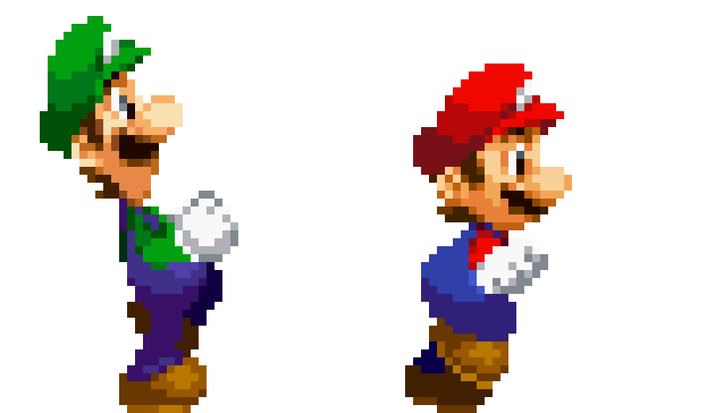
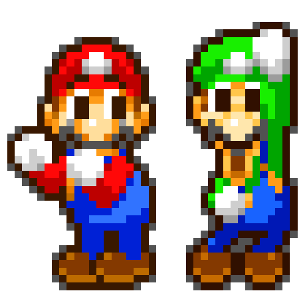

ESPAÇO — BLOCO TEXTO 01
Apresentação
Beyond the Game
Muito além de jogar, existe o universo de criar.
O Beyond the Game nasceu da paixão pelos videogames e da curiosidade de explorar tudo aquilo que existe por trás deles.
Desde a infância, os jogos fazem parte da minha história. Mais do que entretenimento, sempre representaram espaços de imaginação, criatividade e descoberta. Com o passar do tempo, essa admiração despertou uma vontade diferente: compreender como esses universos são construídos e descobrir as possibilidades que a tecnologia oferece para transformar ideias em realidade.
Hoje, essa curiosidade encontra novos caminhos na Ciência da Computação, no estudo da programação e no desenvolvimento de jogos. Cada novo conhecimento representa uma oportunidade de aprender, experimentar e dar forma a projetos próprios.
O Beyond the Game é o espaço onde essa jornada ganha vida. Um ambiente dedicado ao aprendizado, à exploração de tecnologias, ao desenvolvimento de projetos e à liberdade de criar.
Aqui, o processo também faz parte do resultado. Ideias, experimentos, desafios e conquistas encontram seu lugar, acompanhando a evolução de quem está construindo seu próprio caminho no universo da tecnologia.
Afinal, os jogos podem ser o ponto de partida, mas as possibilidades vão muito além deles.
Welcome to Beyond the Game.

ESPAÇO — BLOCO TEXTO 02
Interesses
Meus Interesses
Meus interesses estão ligados principalmente à tecnologia, à criatividade e às possibilidades que surgem quando essas duas áreas se encontram.
Os videogames sempre tiveram um lugar especial na minha vida, mas, com o tempo, minha curiosidade passou a ir além da experiência de jogar. Comecei a me interessar por tudo o que existe por trás de um jogo: sua programação, suas mecânicas, seus cenários, seus personagens e os sistemas que tornam cada experiência possível.
🎮 Videogames e Game Design
Tenho grande interesse por videogames, especialmente jogos clássicos e experiências que despertam criatividade e imaginação. Gosto de explorar como os jogos são construídos, como suas mecânicas funcionam e como diferentes elementos se unem para formar mundos e experiências interativas.
💻 Programação e Desenvolvimento de Software
A programação representa uma oportunidade de transformar ideias em algo concreto. Tenho interesse em aprender diferentes linguagens, compreender a lógica por trás dos sistemas e desenvolver programas, aplicações e ferramentas que possam resolver problemas ou criar novas possibilidades.
⚙️ Tecnologia e Computação
Também me interessa explorar o funcionamento dos computadores, os sistemas, as ferramentas e as tecnologias que fazem parte do mundo digital. Quero compreender não apenas como utilizar essas ferramentas, mas também como funcionam e como podem ser aplicadas na criação de novos projetos.
🎨 Criatividade e Projetos Próprios
Gosto da ideia de transformar conceitos e referências em projetos originais. Isso envolve experimentar, planejar, desenvolver e aperfeiçoar ideias, seja na criação de jogos, aplicações ou outras experiências digitais. Para mim, criar também é uma forma de aprender e descobrir novas possibilidades.
Esses interesses não representam áreas isoladas, mas diferentes caminhos que se conectam. É justamente nessa conexão entre tecnologia, lógica e criatividade que encontro boa parte da minha motivação para continuar aprendendo e construindo.

ESPAÇO — BLOCO TEXTO 03
Minha relação com os jogos e a tecnologia
Existe algo nos videogames que sempre chamou minha atenção: a capacidade de transformar ideias em experiências. Um conjunto de pixels pode dar vida a um personagem, uma sequência de fases pode construir um mundo inteiro e algumas mecânicas bem pensadas podem fazer uma experiência permanecer na memória por muitos anos.
Jogos como Super Mario Bros. marcaram minha relação com esse universo. Mas existe uma parte dessa história que merece um destaque especial: Super Mario Bros. X (SMBX). Mais do que uma homenagem aos jogos clássicos de Mario, SMBX representa uma ideia que considero fascinante: permitir que os próprios jogadores ultrapassem os limites de simplesmente jogar e passem a criar suas próprias aventuras.
A possibilidade de construir fases, desenvolver mundos, combinar personagens, elementos e mecânicas e compartilhar criações com outras pessoas mostra como a criatividade de uma comunidade pode manter um universo vivo e em constante expansão. O legado do SMBX está justamente nessa liberdade de criação e na maneira como transformou a admiração por um jogo em uma oportunidade de desenvolver experiências próprias.
Essa filosofia também influencia a maneira como enxergo a tecnologia. Aquilo que antes eu explorava como jogador passou a despertar novas perguntas: como funciona? Como foi construído? Que lógica existe por trás disso? E, principalmente, como eu poderia criar algo com minhas próprias ideias?
Com isso, comecei a olhar para a programação, o desenvolvimento de jogos e as ferramentas de criação como caminhos para transformar imaginação em algo concreto. A tecnologia passou a representar não apenas um meio de compreender os universos que admiro, mas também uma oportunidade de construir os meus próprios.
É nessa conexão entre jogos, tecnologia e liberdade criativa que encontro uma das minhas maiores motivações. Quero aprender, experimentar e desenvolver projetos que carreguem minhas próprias ideias, assim como tantas criações de comunidades de jogos despertaram minha vontade de fazer o mesmo.
No fim, talvez seja essa a parte mais interessante de tudo: aquilo que começou como a vontade de explorar mundos criados por outras pessoas também se tornou a vontade de criar mundos que outras pessoas possam explorar.